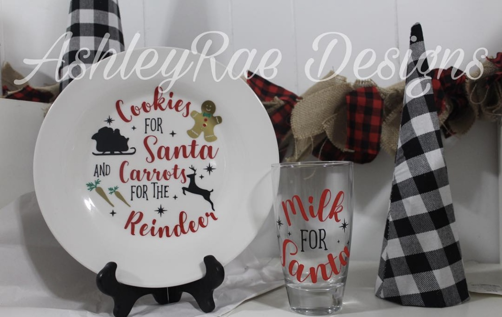

Work I've Done
Cubs Inspired Centerpieces
Laundry Lost and Found Collector

A Plate and Glass Set for When Santa Visits
Crafting is a big passion of mine. I have loved to craft ever since I was a little girl.
My grandmother always used to create such wonderful and fun pieces of art from the things
she had lying around the house. Her creativity and joy for making things is what inspired
me as a child to pursue art and creativity in my career. I continue to expand my horizons and
am constantly challenging myself to try new projects. It is always fun seeing what I can come up
with!